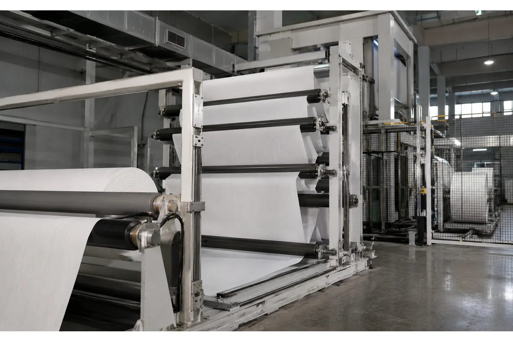
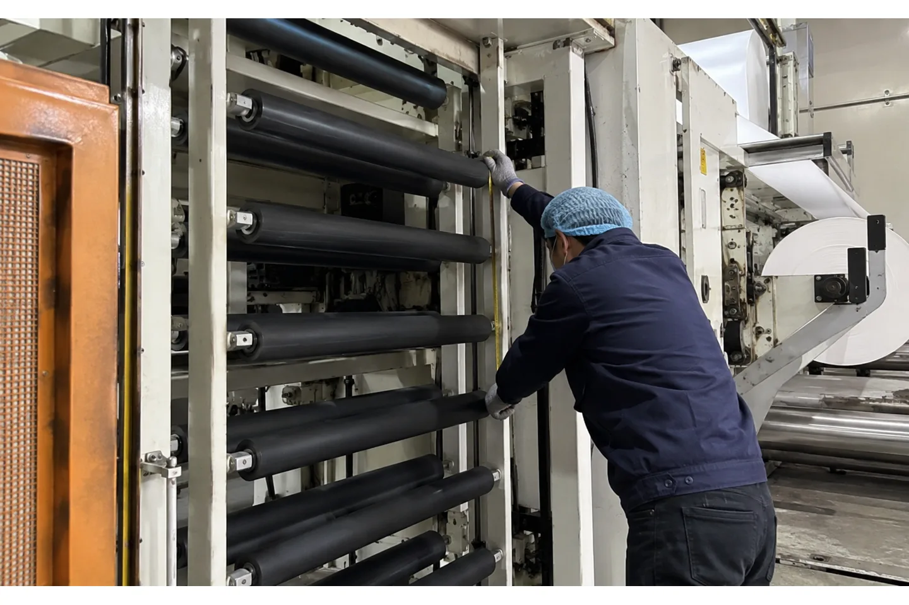

Published August 14, 2026 | By HDPTH Technical Editorial Team

Web accumulators often appear as a line-integration option on a converting quotation, but the word can hide several different jobs. A festoon may bridge a short roll-change interruption. A dancer-style storage section may smooth speed changes. A looping pit may provide the reserve needed for continuous operation. The buyer needs to define the event first.
For a slitter rewinder project, the useful question is not “Do we need an accumulator?” It is “Which process must remain at speed, for how long, and what web tension can the material tolerate while the rewinder completes its task?” The answer determines storage length, roller arrangement, drive control, floor space and the acceptance test.
What an accumulator does in a slitting line
An accumulator temporarily stores a moving web between two process sections that cannot always run at the same speed. During normal running, the storage section may remain nearly full or nearly empty while the connected machines run together. When the slitter rewinder slows or stops for a planned event, the accumulator pays out or accepts web so the other section can continue for the defined interval.
That function is different from a splice table. A splice table helps an operator join or cut web at a preparation station; an accumulator supplies web length while the operation takes place. It is also different from a non-stop turret transfer, which reduces the interruption at the rewind itself. A complete line may use two or all three, but each solves a separate bottleneck.
Decide whether the business case is real
Start with the production sequence. Record the upstream speed, downstream speed, normal roll length, average transfer time, worst-case transfer time, operator delay and the number of events per shift. If a short stop does not create a meaningful loss or quality risk, the additional rollers, drives and controls may not be justified.
Accumulators have the strongest case when the connected process is continuous or expensive to restart, the transfer event is predictable, and the web can tolerate the extra path length. They are less attractive when the product is highly stretch-sensitive, the interruption is long and variable, or a different rewind architecture could eliminate the stop. Ask the supplier to compare the accumulator option with a faster cycle, a splice station or an automatic roll-transfer system.
Size storage from time, speed and recovery
Required storage is the web speed multiplied by the time the connected process must be bridged, with an allowance for the usable travel range of the mechanism. Do not use the total geometric path length as usable storage: some travel is reserved for acceleration, tension control and end-of-stroke margin. The line supplier should show the calculation in metres or feet and identify the minimum and maximum operating speeds.
A useful design brief states the normal speed, the bridge time, the maximum number of loops, the desired reserve before a transfer and the recovery time after the event. The accumulator may need to fill before a changeover and refill afterward. Those transitions must be included in the throughput model; otherwise the line can appear continuous on paper but gradually lose stored web over repeated cycles. Industry guidance also treats accumulator storage as a cycle-time item, not as a generic speed accessory.

Choose the mechanical arrangement for the material
Festoon accumulators use repeated rollers and moving frames to create storage in a compact footprint. A dancer or compensation roller uses position and force feedback to maintain a controlled loop. A pit provides more length but may require civil work, access protection and a different maintenance plan. The best arrangement depends on width, roll material, permissible tension variation, storage length and the available ceiling or floor space.
Soft nonwovens and thin films need careful roller surface selection, low inertia and a path that does not introduce wrinkles or edge damage. Paper may accept a different roller and tension range, but dust and trim still need consideration. Ask for the roller diameter, surface, bearings, maximum web width, allowable tension range, cleaning access and emergency-stop behavior as part of the equipment description.
Integrate accumulator control with the slitter rewinder
The accumulator is part of the control system, not simply a bank of rollers. The PLC must coordinate line speed, stored position, tension feedback, acceleration limits and the stop or transfer sequence. Define what happens if the storage reaches its high or low limit, if the web breaks, if a sensor fails, or if an operator requests a manual stop.
- Set high and low travel limits with a controlled slowdown before the hard limit.
- Display stored position and the reason for any line-speed limitation.
- Interlock access doors, moving frames and nip points.
- Provide a recovery sequence after an emergency stop or web break.
- Record whether a transfer was completed, interrupted or manually overridden.
The high-speed slitting machine quotation should identify which signals are exchanged with upstream and downstream equipment and which party supplies the line PLC or communication gateway.
Have a continuous line that cannot stop?
Send the current speed, transfer sequence and measured interruption time. HDPTH can help compare storage, transfer and rewind options before the line layout is fixed.
Discuss your project with HDPTHRFQ checklist for a web accumulator
Give the supplier enough information to model the event instead of asking for a catalogue accumulator. Include web width, material family, thickness or GSM, roll speed, normal and peak speed, target bridge time, maximum tension, allowable loop length, available floor and ceiling height, and the location of adjacent machines.
Also specify the changeover process: where the web is cut, where a new core is prepared, how the first wrap is made, and whether the connected line can briefly change speed. State whether the accumulator must run continuously, fill only during a transfer, or act as a buffer during upstream splicing. If the web is coated, tacky, dusty or static-prone, include that in the material data. A physical sample or video of the current process can reveal constraints that a table of dimensions will miss.
Verify the storage function during FAT
FAT should reproduce the complete event, including the lead-in, stop or transfer, restart and recovery. Measure the actual stored web length at the operating positions and check that tension remains inside the agreed band. Run at the lowest and highest production speeds, because a mechanism that behaves well at one speed may oscillate or reach its limit during acceleration.
Check the sensor calibration, high and low limit response, emergency stop, web-break sequence, operator messages and restart procedure. Time the event from the stop command to stable running again. Then repeat it several times so the result reflects operator use rather than a single demonstration. Record the accumulator state before and after each cycle and include the data in the handover file.
Plan installation and maintenance before ordering
Moving frames and multiple rollers need clear access for cleaning, threading and inspection. Confirm floor loading, overhead clearance, guarding, electrical supply, compressed air if used, and the route for bringing the equipment into the building. The site-preparation checklist should be updated to include the accumulator’s full travel envelope, not only the static footprint.
For long-term operation, define how rollers are cleaned, how bearings are inspected, how the web path is threaded safely and how the storage position is calibrated after maintenance. A simple visual indication of stored length helps operators understand why the line is limiting speed. That is often more valuable than a complex screen full of unlabelled diagnostic values.
How HDPTH should evaluate the line request
HDPTH can review an accumulator as part of a custom slitting, rewinding and material-handling project. Start with the parent-roll and finished-roll data, then map the upstream and downstream sequence. The result may be a standalone rewinding machine, a slitter rewinder with a transfer sequence, or a larger line with additional storage.
For the quotation, ask for a line diagram that labels each web zone, drive, sensor and stored-length limit. Agree on the material trial and cycle-time evidence before fabrication. This keeps the accumulator focused on a measurable production problem and prevents an expensive buffer from becoming an untested accessory.
Turn the requirement into an RFQ line item
Before comparing quotations for slitter rewinder web accumulator: when should buyers specify one?, put the operating requirement in a form that two suppliers can price and test in the same way. State the material family and its full working range, the parent-roll condition, the finished-roll drawing, the core, the number of lanes, the target speed and the changeover pattern. If the job includes more than one substrate, list each substrate separately instead of using a single average value.
- Define the quality result the plant must accept, such as edge condition, roll profile, web presence, winding stability or commissioning evidence.
- List the measurement method, sample size, inspection locations, conditioning time and who signs the result.
- Ask for the relevant tooling, sensor, tension, guiding, drive and guarding details in the supplier response.
- Require a FAT trial on representative material and a clear method for repeating the setup after cleaning, transport or a material change.
This structure helps procurement compare like with like and gives production, maintenance and quality teams a shared handover record. It also makes later troubleshooting faster: the team can see whether a result changed because of the material, the recipe, the measurement method or the machine. A concise requirement sheet is usually more valuable than a long list of headline specifications with no acceptance method.
Buyer FAQs
When does a slitter rewinder need a web accumulator?
It is useful when an upstream or downstream process must keep running while the rewinder briefly stops for transfer, splice, core preparation or another planned event. The need should be confirmed from measured cycle time and web speed.
How do I calculate accumulator storage length?
Multiply the web speed by the time that must be bridged, then allow for usable travel, acceleration, tension control and a safety margin. The supplier should show the calculation and identify the operating reserve.
Is an accumulator the same as a splice table?
No. A splice table provides a work surface and clamping or cutting functions for joining or preparing web. An accumulator stores moving web so another process can continue during that work.
What should be tested at FAT?
Test the complete stop or transfer event at representative speeds, including storage position, tension, limit response, web-break behavior, emergency stop, restart and repeated-cycle performance.
Can an accumulator handle thin film or soft nonwoven?
Often, but the roller diameter, surface, inertia, tension feedback and acceleration profile must match the material. A production-material trial is the safest way to confirm wrinkle-free handling.
Sources
- U.S. Webcon: Web Accumulators for roll changeover and web storage
- Converting Quarterly: slitter/rewinder accumulator and cycle-time guidance
- DFE: Slitter-Rewinder Tension Control application note
Specify the event, then specify the accumulator
Share your material, speed, bridge time, line layout and changeover sequence. The HDPTH engineering team can turn those operating facts into a testable web-storage requirement.
Send an RFQ to HDPTH